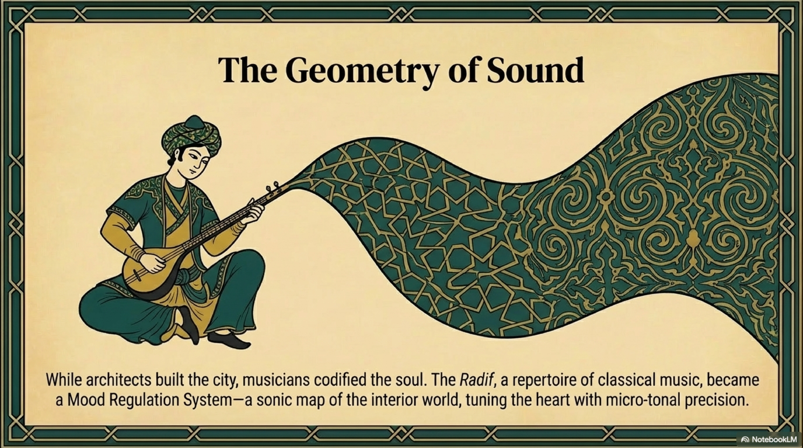
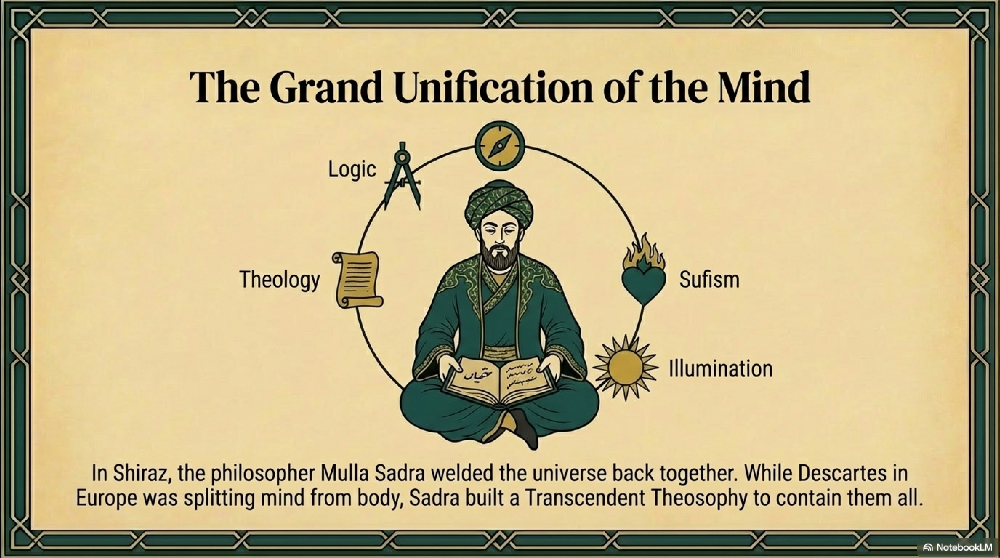
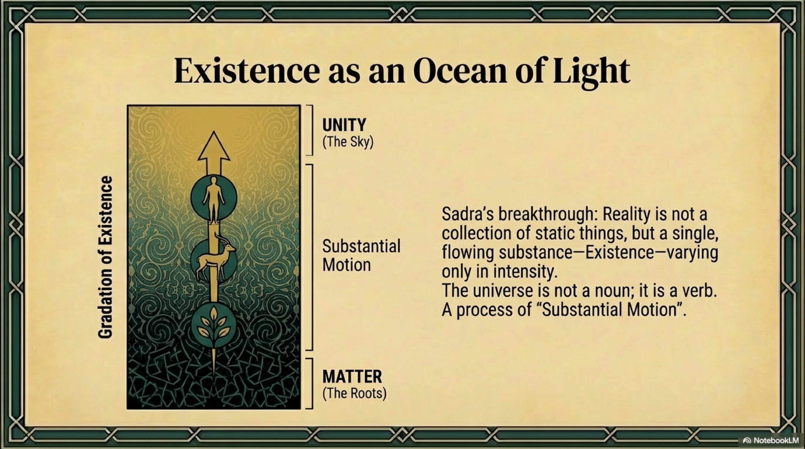
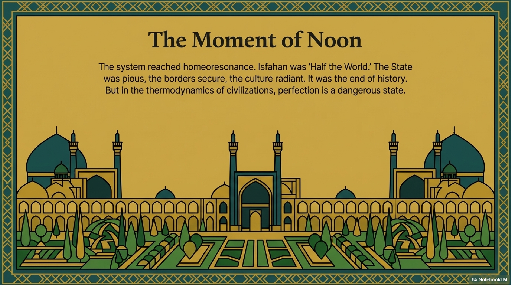
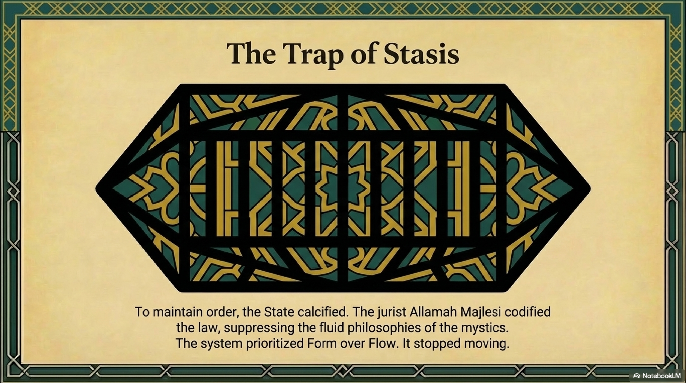
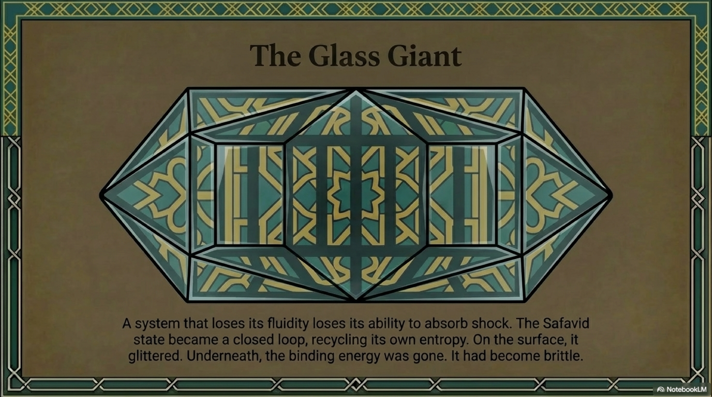

If the universe is a gradient of Light, as Suhrawardi claimed, how does it move? How does the pure, static perfection of the Light of Lights, Level 7, manage the messy, changing details of the physical world, Level 1?
The materialist says: Laws of Physics. The theologian says: God's Will. The Persian Mind says: Angels.
To the modern ear, "angel" sounds like a fairytale. We imagine winged humans playing harps. But in the architecture of Persian thought—from Zoroaster to Avicenna to Suhrawardi—an angel, or Fereshteh, is not a mascot. It is a Function.
Through the lens of our structural analysis, angelology is not theology. It is Systems Theory.

Avicenna and Suhrawardi described the universe as a cascade of intelligences. The One generates the First Intellect. The First generates the Second. And so on, down to the Tenth Intellect, which governs the sub-lunar world, Earth.
They called the Tenth Intellect the Active Intellect. It is the "Giver of Forms." It is the database of all possible shapes, concepts, and souls.
In FRC terms, these "Intellects" or "Angels" are Attractor Basins in the cosmic coherence field. They are the stable patterns that energy naturally flows into.
Angels are the Operating System Daemons of reality. They are the sub-routines that maintain the coherence of specific domains.

Suhrawardi added a crucial layer: The Lord of the Species.
He argued that every species—lions, roses, humans, stars—has a "Guardian Angel" in the Imaginal World. This angel is the perfect, luminous template of that species.
The "Angel of the Lion" is not a definition. It is a conscious entity. It loves its physical reflections. It guides them. It lures them toward perfection.
This aligns perfectly with the Principle of the Attractor in complexity science. An attractor is not just a mathematical point. In a complex system, it acts as if it has agency. It pulls the system toward itself. It corrects deviations.
The Persians simply recognized that a self-organizing, goal-seeking pattern is indistinguishable from a Spirit.

But angels are high above. Humans live down below, in the mud and the market.
While Suhrawardi mapped the angels of the sky, another poet-philosopher mapped the "Angels of the Street."
Saadi of Shiraz (1210–1291) is often called the "Master of Speech." He lived through the Mongol invasion. He traveled from India to North Africa. He saw civilizations burn.
And he realized that in a world of high entropy, the rigid laws of the State and the abstract laws of the Angels were not enough to keep people alive. You needed a Social Physics.
Saadi wrote the Golestan (The Rose Garden) and the Bustan (The Orchard). These are manuals for Level 3, The Fire. They teach the art of Emotional Regulation and Social Coherence.
Saadi taught the concept of Adab, or Refinement. He argued that "Good Behavior" is not just about being polite. It is about Thermodynamic Insulation.
In a crowded, dangerous world, social friction creates heat. It creates conflict. It drains the energy of the community. Adab is the lubricant. It creates a buffer zone of courtesy that prevents the sparks of individual ego from igniting the collective.
He famously wrote: "A comforting lie is better than a seditious truth." To a Western Kantian, this is immoral. To Saadi, it is Systems Maintenance. If the "Truth" will cause a war, and a "Lie" will maintain peace, then the Lie is the higher functional good in that specific moment.

This philosophy crystallized into the uniquely Persian practice of Taarof.
Westerners often dismiss Taarof as "insincere politeness." Through the FRC lens, it is a High-Fidelity Coherence Protocol.
Iran has historically been a high-stakes hierarchy. The interaction between a superior and an inferior is a high-voltage event. Without a transformer, the circuit blows.
Taarof is the transformer.
By using language that lowers the self ("I am your slave," "I am dust") and raises the other ("You are a prince," "You are the light"), the speaker reduces the Social Activation Energy required for interaction. It turns a potential conflict into a ritual of mutual respect. It allows commerce, marriage, and politics to happen without the ego-friction that destroys systems.
Similarly, the suffix -joon (meaning "soul" or "life") attached to names acts as a Coherence Binder. By calling someone "Brother-soul," you elevate the interaction from a material transaction to a spiritual connection.
Saadi taught the Persians that you cannot always rely on the King to save you, and you cannot always wait for the Angel to guide you. Sometimes, you must save each other with the simple, profound technology of a kind word.

The Persian political system mirrored this cosmology.
The King was the earthly reflection of the Cosmic Order. The Angels were the guardians of the Species. And the People, guided by Saadi, were the guardians of the Social Web.
This gave the civilization immense resilience. They had decentralized their Source of Order. They had stored their government in the Cloud (The Imaginal) and their ethics in the Street (The Adab).
But this "Cloud" was about to be tested by the greatest storm in human history. The logic of the philosophers and the visions of the mystics were safe in the high towers of the mind.
But the ground floor was about to catch fire.
The Mongols were coming. And they did not believe in angels. They believed in ash.